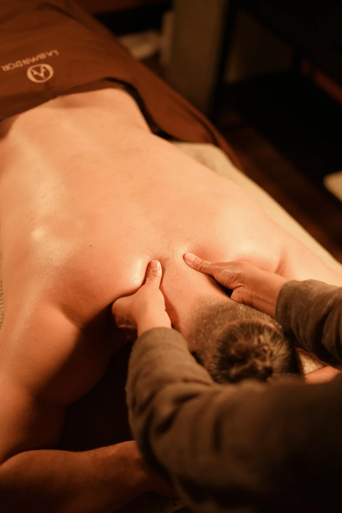
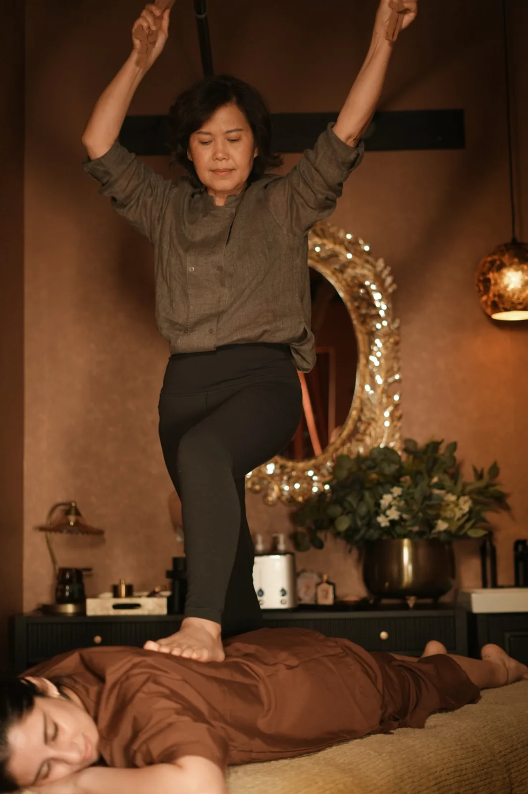

BAAN D’OR · MONTRÉAL
L’Art ancestral du bien-être thaïlandais
Des rituels d’exception. Un savoir-faire ancestral. Découvrez une expérience de massage thaïlandais haut de gamme au cœur de Montréal.
Réserver maintenantDécouvrir nos soins
BAAN D’OR · MONTRÉAL
L’Initiation Dorée
30 minutes offertes : profitez de 90 minutes au prix de 60 lors de votre première visite. Au choix : Le Rituel Signature Baan d’Or ou L’Héritage Royal Thaï.
Appelez-nous
BAAN D’OR · MONTRÉAL
Privilège Fidélité
9 visites. La 10ᵉ offerte : profitez d’une séance de 90 minutes.
Réserver mon prochain soin
BAAN D’OR · MONTRÉAL
L’Essence Duo sur mesure
2 soins pour une personne · 90 minutes · 190 $. Composez votre propre rituel de massage thaïlandais.
Personnaliser mon rituelBAAN D’OR · MONTRÉAL
La Trilogie Baan d’Or
Faites du bien-être un art de vivre. Choisissez 3 séances de 60 ou de 90 minutes, à partir de 390 $.
Découvrir la Trilogie
BAAN D’OR
Notre collection de soins
Découvrez l’art du massage thaïlandais à Montréal à travers nos rituels d’exception.






La confiance de nos clients
Ils Ont Vécu L’Expérience Baan d’Or
Avis Google
Nom du client
Emplacement réservé à un avis authentique de Google.
Nom du client
Emplacement réservé à un avis authentique de Google.
Des privilèges à découvrir
Prolongez votre parenthèse de bien-être avec nos forfaits, nos offres exclusives et nos expériences à partager.
Voir les forfaits & offresBien-être corporatifL’Univers Baan D’Or